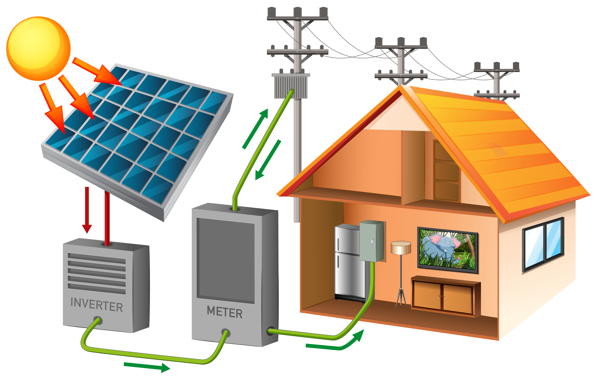

.jpg)
Panel surya atau solar cell adalah perangkat yang dirancang untuk menangkap sinar matahari dan mengubahnya menjadi energi listrik. Teknologi ini merupakan salah satu bentuk pemanfaatan energi terbarukan yang paling ramah lingkungan. Pada halaman ini, kita akan membahas komponen-komponen utama penyusun panel surya beserta urutan cara kerjanya hingga bisa menghasilkan listrik untuk kebutuhan sehari-hari.
Sebelum mengenal cara kerja panel surya kita perlu tahu terlebih dahulu komponen apa saja yang ada pada panel surya.
Berikut komponen komponen yang ada pada panel surya;
Panel surya merupakan komponen utama yang berfungsi untuk menangkap cahaya matahari dan mengkonversikannya menjadi arus listrik searah atau Direct Current (DC) dengan menggunakan efek photovoltaic / PV. Efek photovoltaic didefinisikan sebagi suatu fenomena munculnya voltase listrik akibat kontak dua elektroda yang dihubungkan dengan sistem padatan atau cairan saat diekspos di bawah energi cahaya.
Inverter adalah sebuah komponen yang berfungsi untuk menerima energi listrik Direct Current (DC) dari panel surya dan mengkonversikannya ke arus listrik bolak-balik atau Alternative Current (AC), yaitu energi listrik yang dipakai di rumah kita. Dengan adanya Inverter tersebut, kelebihan listrik yang diperoleh dari sistem panel surya dapat disalurkan kembali ke jaringan listrik PLN.
Baterai merupakan komponen tambahan dalam sistem panel surya. Apabila menggunakan baterai pada sistem panel surya, setiap kelebihan energi listrik yang dihasilkan dapat disimpan pada baterai untuk digunakan ketika sedang tidak ada cahaya matahari. Setelah baterai terisi penuh, kelebihan energi listrik selanjutnya dapat ditransfer ke jaringan PLN.
komponen elektronik yang berfungsi sebagai pengatur lalu lintas energi antara panel surya, baterai, dan beban listrik.
Net Metering adalah sebuah komponen penghitung dimana listrik yang dihasilkan oleh panel surya dapat dikirim ke jaringan PLN, dan dapat digunakan kembali untuk konsumsi rumah tangga tersebut. Di Indonesia, regulasi pemasangan Net Metering sudah diterbitkan oleh PLN dalam Peraturan 0733.K/DIR/2013, yang mewajibkan PLN untuk mengkredit energi yang dihasilkan oleh panel surya ke rekening pelanggan.
